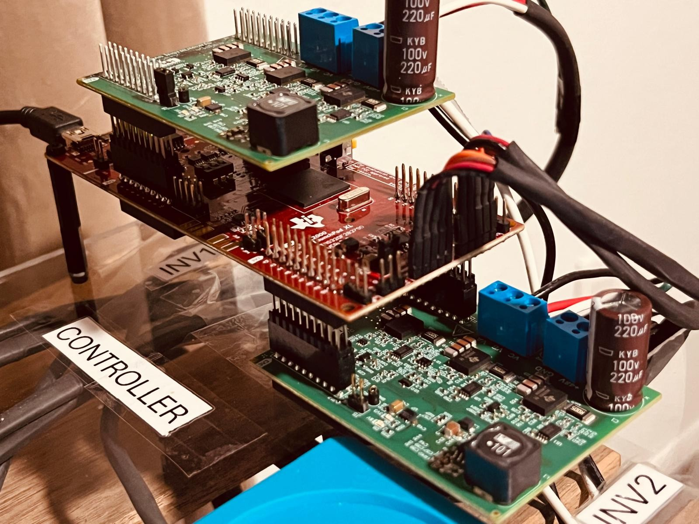
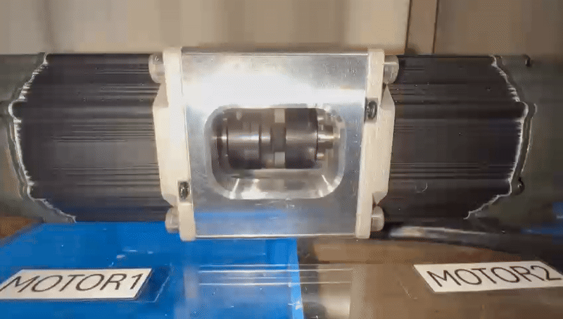

PMSM Field Oriented Control
Implementing Field Oriented Control (FOC) for a Permanent Magnet Synchronous Motor (PMSM) using the TI C2000 LaunchPad (F28379D) along with a 3-phase GaN inverter (BOOSTXL-3PhGaNInv). This project utilizes:
- TI's Fast Current Loop (FCL) library to enhance current loop bandwidth and overall control performance.
- Software Frequency Response Analyzer (SFRA) library for detailed system analysis.
Hardware Used:
- TI LaunchPad Development Kit (LAUNCHXL-F28379D)
- 3-phase GaN inverter (BOOSTXL-3PhGaNInv)
- Teknic Motor M-2310P-LN-04K
- 48V DC Power Supply
Technologies Used: FOC, FCL Library, SFRA Library, PWM, Motor Control
Project Type: Personal Project (Building upon knowledge from University of Michigan EECS 419)
Overview of the hardware setup, including the TI LaunchPad, 3-phase GaN inverter, Two Teknic Motors and power supply.
Key Features and Progress:
Successfully completed all 6 incremental build levels as outlined by the Texas Instruments application report, "Dual-Axis Motor Control Using FCL and SFRA On a Single C2000™ MCU".
Build Level 1: Basic PWM Generation
- Initialized and verified PWM signal generation.
- Implemented space vector modulation (SVM) to drive the 3-phase inverter.

Oscilloscope captures of the PWM signals (EPWM1A & B - High and Low switches (Gallium Nitride (GaN) Field Effect Transistors (FETs)) for Motor Phase A - note their complementary nature), demonstrating the correct generation of PWM waveforms.
Build Level 2: Open Loop Motor Control
- Achieved open-loop control of the motor.
- Calibrated DC bus voltage measurement for accurate scaling and ADC readings.
- Verified QEP interface for encoder feedback.
System diagram for Build Level 2, illustrating the connections between the C2000 LaunchPad, GaN inverter, and Teknic Motor (Img Ref: TI Dual-Axis Motor Control using FCL).

Oscilloscope captures of the scaled-down phase voltages resulting from the PWM signals shown above (for Motor Phase A & Phase B - note the expected 120-degree phase difference between each phase).
Plots of the motor electrical position and current during open-loop control as captured via debugger. Because of open loop control, the rotor position and reference position do not align, only the speeds match since reference theta is used to determine field's rotational frequency
Build Level 3: Current Control Loop
- Implemented the current control loop using the FCL library.
- Performed latency measurements between ADC and QEP sampling and PWM updates.
- Chose a PI controller for current regulation.
System diagram for Build Level 3 (Img Ref: TI Dual-Axis Motor Control using FCL).
Plots of the motor electrical position and q-axis current during current control loop as captured via debugger. The current loop is closed and the current is regulated to the reference value.
Build Level 4: Speed Control Loop
- Implemented the speed control loop.
- Conducted tests at different speed settings.
System diagram for Build Level 4 (Img Ref: TI Dual-Axis Motor Control using FCL).
Plots of the dual, independent motor electrical position and speed during speed control loop as captured via debugger. The speed loop is closed and the speed is regulated to the reference value.
The two de-coupled motors running at same speeds, demonstrating the independent control of each motor.
Build Level 5: Position Control Loop
- Implemented the position control loop.
- Ran the motor through predefined motion profiles.
System diagram for Build Level 5 (Img Ref: TI Dual-Axis Motor Control using FCL).
Plots of the motor electrical position and speed during position control loop as captured via debugger. The position loop is closed and the position is regulated to the reference value.

The motor running through a predefined motion profile, demonstrating the position control loop.
Build Level 6: Frequency Response Analysis
- Utilized the SFRA tool to perform frequency response analysis of the current loops.
- Analyzed system performance at various bandwidth settings and under different load conditions.
- Compared open-loop, closed-loop, and plant models using the SFRA GUI.
System diagram for Build Level 6 (Img Ref: TI Dual-Axis Motor Control using FCL).
Frequency response analysis of the d-axis current loop in open-loop control, showing the Bode plot of the current loop (PI Controller).
Frequency response analysis of the d-axis current loop in closed-loop control, showing the Bode plot of the current loop (PI Controller).
Frequency response analysis of the q-axis current loop in open-loop control, showing the Bode plot of the current loop (PI Controller).
Frequency response analysis of the q-axis current loop in closed-loop control, showing the Bode plot of the current loop (PI Controller).
Next Steps:
- Investigate bode plots of d and q-axis current loops for accuracy/validity
- Analyze speed loop via open and close loop bode plots
- Further explore multi-axis control using a single C2000 MCU.
- Optimize control parameters for enhanced performance and efficiency. Back to Projects